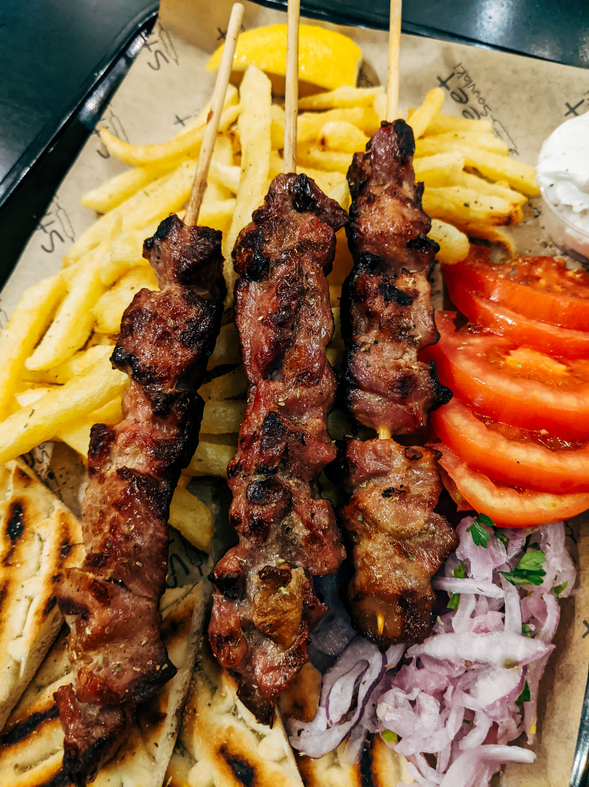

Souvlaki

Description
Souvlaki is a very popular Greek food which consists of meat grilled
on a skewer. Usually it is made with either pork or chicken.
Ingredients
- Olive oil
- Salt and pepper
- Juice of 1 medium lemon
- dried oregano
- 1 kg of pork neck
- Wooden skewers, soaked in water
Steps
Cut the pork neck into small cubes and thread them onto the skewers.
Be careful not to thread them too tightly or the meat won't cook
through as quickly and may end up too dark on the outside.
- Season the meat with salt, pepper and oregano and brush it with olive oil.
- Place the skewers on the grill and grill them until they're nicely browned.
- Drizzle some lemon juice over them.
Home